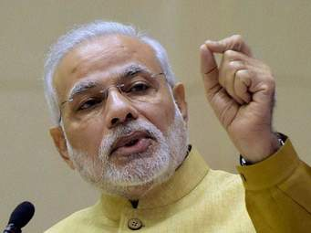

Narendra damadordas modi
Narendra Damodardas Modi (Gujarati pronunciation: ['narendra damadordas modi'] (About this soundlisten); born 17 September 1950) is an Indian politician serving as the 14th and current Prime Minister of India since 2014. He was the Chief Minister of Gujarat from 2001 to 2014 and is the Member of Parliament for Varanasi. Modi is a member of the Bharatiya Janata Party (BJP) and of the Rashtriya Swayamsevak Sangh (RSS), a Hindu nationalist volunteer organisation. He is the first prime minister outside of the Indian National Congress to win two consecutive terms with a full majority and the second to complete five years in office after Atal Bihari Vajpayee.[2]
“Modi was appointed general seceretary of the "GUJRAT LOK SANGHARSH SAMITI",An RSS committee co-ordinating opposition to the emergengy in Gujrat. He returened to Gujrat a short while later ,and was assigned by RSS to the BJP(bharitya janta party) in 1985
Narendra Damodardas Modi, a True Champion, and a Legendary politician is THE FACE OF MODERN Indian youth politicians. The Prime minister of India “role model for Young upcomming generation in politics as well as a great human being”. Modi, the person who handles and managining the second most populated country with billion of populatin India has successfully set up the path towards the development of Modern India.
Born to a Gujarati family in Vadnagar, Modi helped his father sell tea as a child and has said he later ran his own stall. He was introduced to the RSS at the age of eight, beginning a long association with the organisation. Modi left home after finishing high-school in part due to an arranged marriage to Jashodaben Chimanlal Modi, which he abandoned and publicly acknowledged only many decades later. Modi travelled around India for two years and visited a number of religious centres before returning to Gujarat. In 1971 he became a full-time worker for the RSS. During the state of emergency imposed across the country in 1975, Modi was forced to go into hiding. The RSS assigned him to the BJP in 1985 and he held several positions within the party hierarchy until 2001, rising to the rank of general secretary. Younger upcomming generations how to take advantage of the opportunities by taking some risks in life. modi always believes “The knowledge we derive from failures ,is always more than what our successes have taught us".
Modi politics styles and strategies give an impression of his walking and controlling the second most populated country .Modi led the BJP in the 2014 general election which gave the party a majority in the Indian lower house of parliament, the Lok Sabha, the first time for any single party since 1984. Modi's administration has tried to raise foreign direct investment in the Indian economy and reduced spending on healthcare and social welfare programmes. Modi has attempted to improve efficiency in the bureaucracy; he has centralised power by abolishing the Planning Commission. He began a high-profile sanitation campaign and weakened or abolished environmental and labour laws. He initiated a controversial demonetisation of high-denomination banknotes.
“All of us, in a sense, struggle continuously all the time because we never get what we want. The important thing which I’ve learned is how you do not give up because you never succeed in the first attempt.”
Narendra Damadordas Modi, Narendra Modi was born on 17 September 1950 to a Gujarati Hindu family of grocers in Vadnagar, Mehsana district, Bombay State (present-day Gujarat). He was the third of six children born to Damodardas Mulchand Modi (c. 1915–1989) and Hiraben Modi (born c. 1920).[19] Modi's family belonged to the Modh-Ghanchi-Teli (oil-presser) community,[20][21][22] which is categorised as an Other Backward Class by the Indian government.[23][24] As a child, Modi helped his father sell tea at the Vadnagar railway station, and said that he later ran a tea stall with his brother near a bus terminus.[25] Modi completed his higher secondary education in Vadnagar in 1967, where a teacher described him as an average student and a keen debater, with interest in theatre.[26] Modi had an early gift for rhetoric in debates, and his teachers and students noted this.[27] Modi preferred playing larger-than-life characters in theatrical productions, which has influenced his political image.[28][29] When eight years old, Modi discovered the Rashtriya Swayamsevak Sangh (RSS) and began attending its local shakhas (training sessions). There, Modi met Lakshmanrao Inamdar, popularly known as Vakil Saheb, who inducted him as a balswayamsevak (junior cadet) in the RSS and became his political mentor.[30] While Modi was training with the RSS, he also met Vasant Gajendragadkar and Nathalal Jaghda, Bharatiya Jana Sangh leaders who were founding members of the BJP's Gujarat unit in 1980.[31] Also in Narendra Modi's childhood, in a custom traditional to his caste, his family arranged a betrothal to a girl, Jashodaben Chimanlal Modi, leading to their marriage when they were teenagers.[32][33] Sometime thereafter, he abandoned the further marital obligations implicit in the custom,[34] and left home, the couple going on to lead separate lives, neither marrying again, and the marriage itself remaining unmentioned in Modi's public pronouncements for many decades.[35] In April 2014, shortly before the national elections that swept him to power, Modi publicly affirmed that he was married and his spouse was Jashodaben; the couple has remained married, but estranged.[36].also he is a very humble minded person
Modi In the early summer of 1968, Modi reached the Belur Math but was turned away, after which Modi wandered through Calcutta, West Bengal and Assam, stopping in Siliguri and Guwahati.[42] Modi then went to the Ramakrishna Ashram in Almora, where he was again rejected, before travelling back to Gujarat via Delhi and Rajasthan in 1968–69.[43] Sometime in late 1969 or early 1970, Modi returned to Vadnagar for a brief visit before leaving again for Ahmedabad.[44] There, Modi lived with his uncle, working in the latter's canteen at the Gujarat State Road Transport Corporation.[45][46] In Ahmedabad, Modi renewed his acquaintance with Inamdar, who was based at the Hedgewar Bhavan (RSS headquarters) in the city.[47][48][49] After the Indo-Pakistani War of 1971, he stopped working for his uncle and became a full-time pracharak (campaigner) for the RSS,[46] working under Inamdar.[50] Shortly before the war, Modi took part in a non-violent protest against the Indian government in New Delhi, for which he was arrested; this has been cited as a reason for Inamdar electing to mentor him.[50] Many years later Modi would co-author a biography of Inamdar, published in 2001.[51] In 1978 Modi received a Bachelor of Arts degree in political science from School of Open Learning[52] at University of Delhi,[53][54] graduating with a third class.[55] Five years later, in 1983, he received a Master of Arts degree in political science from Gujrat University ,graduating with first class.
narendra modi As Chief Minister, Modi favoured privatisation and small government, which was at odds with the philosophy of the RSS, usually described as anti-privatisation and anti-globalisation. His policies during his second term have been credited with reducing corruption in the state. He established financial and technology parks in Gujarat and during the 2007 Vibrant Gujarat summit, real-estate investment deals worth ?6.6 trillion were signed.[78] The governments led by Patel and Modi supported NGOs and communities in the creation of groundwater-conservation projects. By December 2008, 500,000 structures had been built, of which 113,738 were check dams, which helped recharge the aquifers beneath them.[149] Sixty of the 112 tehsils which had depleted the water table in 2004 had regained their normal groundwater levels by 2010.[150] As a result, the state's production of genetically modified cotton increased to become the largest in India.[149] The boom in cotton production and its semi-arid land use[151] led to Gujarat's agricultural sector growing at an average rate of 9.6 percent from 2001 to 2007.[152] Public irrigation measures in central and southern Gujarat, such as the Sardar Sarovar Dam, were less successful. The Sardar Sarovar project only irrigated 4–6% of the area intended.[149] Nonetheless, from 2001 to 2010 Gujarat recorded an agricultural growth rate of 10.97 percent – the highest of any state.[151] However, sociologists have pointed out that the growth rate under the 1992–97 INC government was 12.9 percent.[153] In 2008 Modi offered land in Gujarat to Tata Motors to set up a plant manufacturing the Nano after a popular agitation had forced the company to move out of West Bengal. Several other companies followed the Tata to Gujarat.[154] The Modi government finished the process of bringing electricity to every village in Gujarat that its predecessor had almost completed.[153] Modi significantly changed the state's system of power distribution, greatly impacting farmers. Gujarat expanded the Jyotigram Yojana scheme, in which agricultural electricity was separated from other rural electricity; the agricultural electricity was rationed to fit scheduled irrigation demands, reducing its cost. Although early protests by farmers ended when those who benefited found that their electricity supply had stabilised,[149] according to an assessment study corporations and large farmers benefited from the policy at the expense of small farmers and labourers.[155]
Developenment debate, Modi A contentious debate surrounds the assessment of Gujarat's economic development during Modi's tenure as chief minister.[156] The state's GDP growth rate averaged 10% during Modi's tenure, a value similar to other highly industrialised states, and above that of the country as a whole.[154] Gujarat also had a high rate of economic growth in the 1990s, before Modi took office, and scholars have stated that growth did not accelerate during Modi's tenure.[157] Under Modi, Gujarat topped the World Bank's "ease of doing business" rankings among Indian states for two consecutive years.[158] In 2013, Gujarat was ranked first among Indian states for "economic freedom" by a report measuring governance, growth, citizens' rights and labour and business regulation among the country's 20 largest states.[154][159] In the later years of Modi's government, Gujarat's economic growth was frequently used as an argument to counter allegations of communalism.[3] Tax breaks for businesses were easier to obtain in Gujarat than in other states, as was land. Modi's policies to make Gujarat attractive for investment included the creation of Special Economic Zones, where labour laws were greatly weakened.[120] Despite its growth rate, Gujarat had a relatively poor record on human development, poverty relief, nutrition and education during Modi's tenure. In 2013, Gujarat ranked 13th in the country with respect to rates of poverty and 21st in education. Nearly 45 percent of children under five were underweight and 23 percent were undernourished, putting the state in the "alarming" category on the India State Hunger Index.[160][161] A study by UNICEF and the Indian government found that Gujarat under Modi had a poor record with respect to immunisation in children.[162] Over the decade from 2001 to 2011, Gujarat did not change its position relative to the rest of the country with respect to poverty and female literacy, remaining near the median of the 29 Indian states.[100] It showed only a marginal improvement in rates of infant mortality, and its position with respect to individual consumption declined.[100] With respect to the quality of education in government schools, the state ranked below most Indian states.[100] The social policies of the government generally did not benefit Muslims, Dalits, and Adivasis, and generally increased social inequalities.[100] Development in Gujarat was generally limited to the urban middle class, and citizens in rural areas or from lower castes were increasingly marginalised. In 2013 the state ranked 10th of 21 Indian states in the Human Development Index.[7] Under Modi, the state government spent far less than the national average on education and healthcare.[100] .
final yearDespite the BJP's shift away from explicit Hindutva, Modi's election campaign in 2007 and 2012 contained elements of Hindu nationalism. Modi only attended Hindu religious ceremonies, and had prominent associations with Hindu religious leaders. During his 2012 campaign he twice refused to wear articles of clothing gifted by Muslim leaders.[120] He did, however, maintain relations with Dawoodi Bohra.[120] His campaign included references to issues known to cause religious polarisation, including to Afzal Guru and the killing of Sohrabuddin Sheikh. The BJP did not nominate any Muslim candidates for the assembly election of 2012.[120] During the 2012 campaign, Modi attempted to identify himself with the state of Gujarat, a strategy similar to that used by Indira Gandhi during the Emergency, and projected himself as protecting Gujarat against persecution by the rest of India.[120] While campaigning for the 2012 assembly elections, Modi made extensive use of holograms and other technologies allowing him to reach a large number of people,[118] something he would repeat in the 2014 general election. In the 2012 Gujarat Legislative Assembly elections, Modi won the constituency of Maninagar by 86,373 votes over Shweta Bhatt, the INC candidate and wife of Sanjiv Bhatt.[163] The BJP won 115 of the 182 seats, continuing its majority during his tenure[164] and allowing the party to form the government (as it had in Gujarat since 1995).[165] In later by-elections the BJP won four more assembly seats and two Lok Sabha seats held by the INC, although Modi did not campaign for its candidates.[166] In 2013, the Wharton India Economic Forum (WIEF) at the Wharton School of the University of Pennsylvania cancelled a keynote video-conference speech by Modi following protests by Indian-Americans.[167] After his election as prime minister, Modi resigned as the chief minister and as MLA from Maninagar on 21 may 2014.Anandiben Patel succeeded him as chief minister.
| Year of Award or Honor | Name of Award or Honor | Awarding Organization |
|---|---|---|
| 3 April 2016 | Order of Abdulaziz Al saud | Saudia Arabia |
| 4th june 2016 | State order of Ghazi Amir Amanullah Khan | Afghanistan |
| 10th feb 2018 | Grand Collor of State of Palestine Award | Palestine |
| 4th april 2019 | Order of Zayed Award | Unite Arab Emirates |
| 12 april 2019 | Order of ST.Andrew award | Russia |
| 8 june 2019 | order of Distinguished of Nishan Izzuddin | Maldives |
| october 2018 | Champions of the earth award | The United Nations Environment Programe |